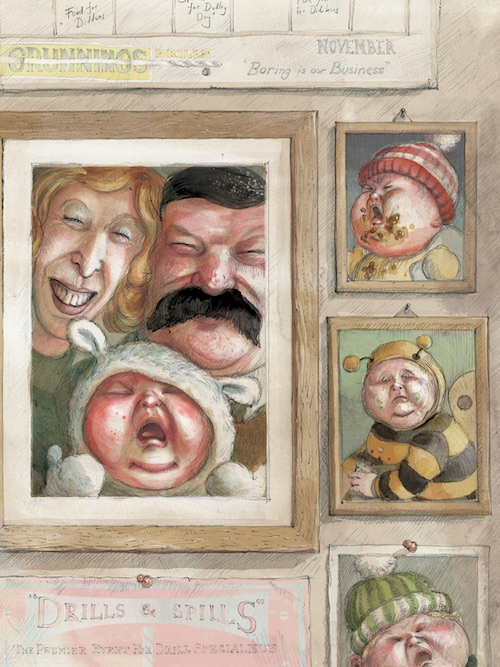
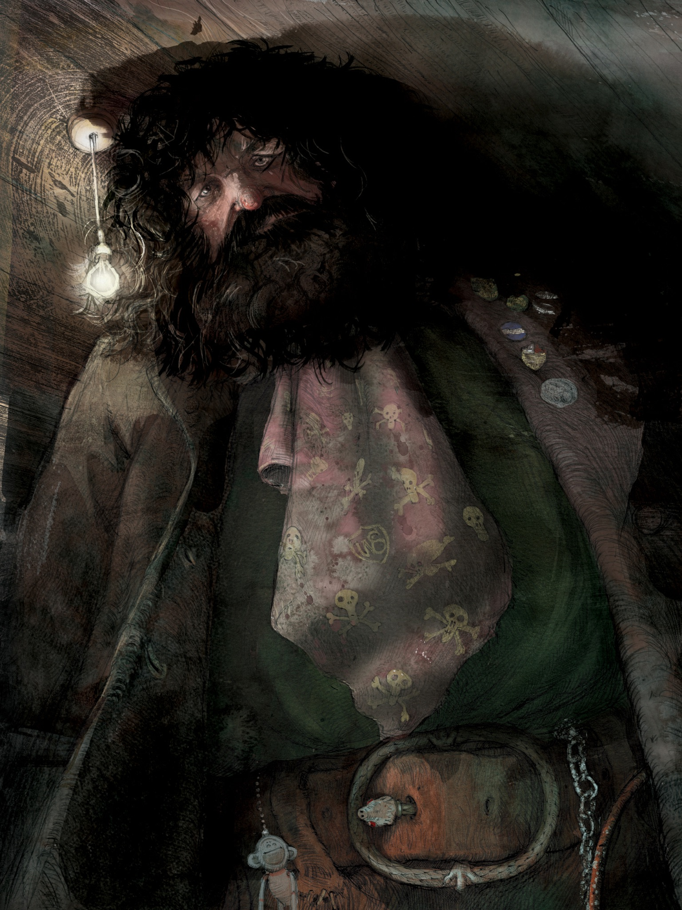

Once upon a time there was an orphan boy named Harry Potter who lived his uncle Vernon Dursleys, aunt Petunia Dursley and their spoiled son Dudley. They were his only remaining family.
Poor Harry was not only mistreated, but strongly disliked by his only family, he was put in the cupboard under the stairs.
One day harry received a letter, as Harry had started to read it, his uncle Vernon snatched the letter from Harry’s hand.

After he had read it he ripped it to pieces then threw it into the fireplace, however the letters kept coming none stop to the Dursleys house to the point it drove his uncle Vernon crazy, so he sealed the whole house, but the letters started to come through the chimney.
After the letter came through the chimney, uncle Vernon told everyone to pack up their stuff and then they drove for long hours and once they finally have arrived they found out that uncle Vernon had rented a small house that appeared to be a shack that was on an island. They got on a small boat in a row to get to the house.
However, it didn’t stop the letters. And one day, a giant called Hagrid knocked on the door asking for Harry to deliver the letter personally.
Hagrid explained to that he’s a wizard just like his parents. And he was sent to the Dursley House when he was a baby by the grand wizard Albus Dumbeldoor.
Hagrid also told Harry that’d be going to The Hogwarts School - The finest witch school of Witchcraft and Wizardry ever!
So, Hagrid and Harry set off to buy for him school supplies, to buy such supplies they had to go to another dimension where only witches can go.
After they got there, Harry found out that he’s popular because the wizard who killed his parents couldn’t kill Harry and he disappeared for a mysterious reason. After Harry got all the supplies he needed, he went to Platform Nine and Three-Quarter where he boarded a train to Hogwarts School and made a couple of friends on the way.
A while later Harry started sneaking around the school, he found out that the mysterious wizard who tried to kill him was going to have some to steal the sorcerer's stone from a hidden location at Hogwarts, Harry knew where the location was so, he went to stop the person from stealing the stone and before they tried to kill Harry. Then, Prof. Dumbeldoor showed up and managed to save Harry.